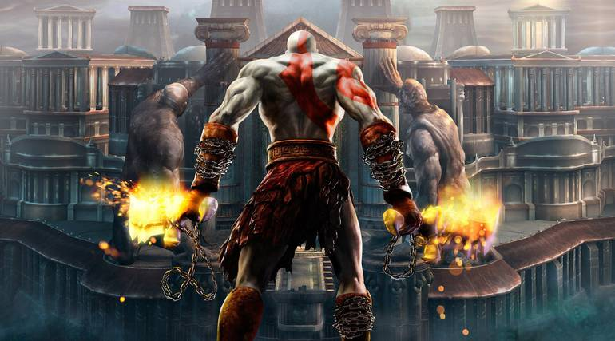
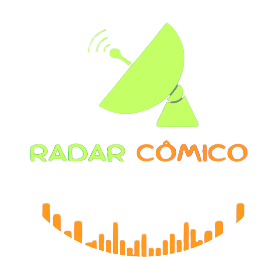

Radar Cômico
Como Jogar Jogos de PlayStation 2 no Celular e PC — Porque Nostalgia Nunca Sai de Moda! 🎮🔥
Fala, gamers de plantão! Se você é daqueles que sente saudade dos clássicos do PlayStation 2, como "God of War" e "GTA: San Andreas", e quer reviver essa emoção sem ter que desenterrar o console da gaveta, seus problemas acabaram! Bora aprender a jogar PS2 no celular e no PC, porque quem precisa de tempo livre, não é mesmo? 😅
E o melhor: tudo no conforto do seu sofá!
 Grand_Theft Auto San Andreas
Grand_Theft Auto San Andreas

God Of War 1
 Resident Evil 4
Resident Evil 4
Só 3 principais títulos de muitos que você poderá jogar!!
Acesse nossa Segunda Página para saber mais

Radar Cômico: Informação esperta, diversão garantida!
Comentários
Comentários Recentes